Kingdom Duels
Giải đấu loại trực tiếp 8 người theo nhánh (tứ kết → bán kết → chung kết), mỗi vòng là một trận đối đầu 1-1 tính giờ thực (mặc định 10 phút/vòng).
Mô tả
- Giải đấu loại trực tiếp 8 người theo nhánh (tứ kết → bán kết → chung kết), mỗi vòng là một trận đối đầu 1-1 tính giờ thực (mặc định 10 phút/vòng).
- Trong vòng, người chơi ghi điểm bằng cách thắng level (hệ số level × 10) và bằng các vật phẩm đặc biệt dùng trong level (Rocket/Spinner 5, Dynamite 10, Electro Ball 20 hoặc 40 với Super Electro Ball, combo, nước đi còn lại × 7), nhân hệ số level.
- Điểm đối thủ cập nhật trực tiếp qua TCP.
- Thua level thì điểm bị khoá (suy luận) cho tới khi thắng lại.
- Ai cao điểm hơn khi hết giờ đi tiếp (bằng điểm thì người đạt trước thắng); vô địch nhận
 1 Wizard Hat +
1 Wizard Hat +  1 Hammer +
1 Hammer +  1 Dynamite +
1 Dynamite +  1 Rocket.
1 Rocket. - Người tham gia được mạng vô hạn trong thời gian vòng đấu để không bị chặn bởi mạng.
Thiết kế chi tiết
Tóm tắt thiết kế
CodeAPK Mở từ level 66. 8 người chia nhánh tứ kết → bán kết → chung kết. Mỗi vòng là một trận 1-1 tính giờ thật, mặc định 600 giây (durations 600 / 600 / 600), nên cả giải khoảng 30 phút. Chỉ nhà vô địch có quà: 1 WH + 1 H + 1 D + 1 R (+ CP4 khi mùa thẻ chạy).
Code Điểm: thắng level = hệ số level × 10. Trong level, mỗi vật phẩm đặc biệt dùng = điểm vật phẩm × hệ số level (Rocket / Spinner 5, Dynamite 10, Electro Ball 20, hoặc 40 khi có Super Electro Ball), combo 15–100, mỗi nước đi còn lại 7 × hệ số. Điểm đối thủ về qua TCP theo thời gian thực.
Code Thua level thì điểm bị khoá (IsScoreLocked) cho tới khi thắng lại. Hết giờ, người nhiều điểm hơn đi tiếp; bằng điểm thì ai đạt điểm đó sớm hơn thắng. Người tham gia được mạng vô hạn đúng bằng thời lượng vòng; nhóm tự vào giải được cả 3 vòng một lần (1.800 giây).
CodeLive 11/11 AB: nhóm 2 / 4 tự vào giải. Ai ở event trước không ghi được điểm nào thì phải thắng 1 level mới được vào lại, để nhánh không có đối thủ “chết”. Icon cột trái chung ô với Power Rush (KINGDOM_DUELS 23 p56 | POWER_RUSH 4 p70).
Luồng người chơi từng bước
- Dialog bắt đầu / nhắcGiao diệnCode
TryAddStartDialogmời vào giải;TryAddReminderDialognhắc lại, tối đa một lần mỗi phiên. - Vào giảiNgười chơiCodeBấm Play (hoặc tự vào với nhóm AB 2/4) →
EnterKingdomDuelsHttpCommand+EnteredKingdomDuelsTcpRequest. Chỉ vào được nếu còn đủ thời gian cho các vòng còn lại (HasEnoughTimeToEnter); analytics KDEnter. - Mạng vô hạnClientCode
GiveUnlimitedLifeRewardcộng mạng vô hạn bằng thời lượng vòng hiện tại (600 giây). Nhóm tự vào giải nhận tổng thời lượng 3 vòng một lần. - Ghép trậnServerCode
OnMatchFoundqua TCP: nhánh 8 ghế (quarterFinal / semiFinal / finalStage), mỗi ghế có userId, điểm, trạng thái khoá. Màn nhánh hiện đối thủ tứ kết. - TutorialGiao diệnCodeLần đầu: tutorial StepOne / StepTwo trên màn nhánh, tooltip luật ghi điểm trong level, tooltip “đối thủ đang bị khoá” cả trong level lẫn ngoài màn.
- Trong levelNgười chơiCodeThanh đối đầu hiện điểm hai bên và đồng hồ vòng. Điểm bay lên mỗi khi dùng vật phẩm đặc biệt hoặc combo; cuối màn cộng thêm nước đi còn lại × 7 × hệ số, và vật phẩm còn trên bàn.
- Thắng levelNgười chơiCode+ hệ số level × 10 (thường 10, Hard 20, Super Hard 50); điểm được mở khoá lại nếu đang bị khoá.
- Thua levelNgười chơiCodeTrước khi bỏ màn có cảnh báo.
OnLevelFailbật IsScoreLocked; ghế của mình hiện trạng thái khoá với đối thủ. - Hết giờ vòngClientCodeGửi điểm lần cuối trước khi hết giờ, lấy final list (tối đa 10 lần thử),
DetermineWinner. Versus scene: WonStage (sang vòng sau) hoặc Eliminated; analytics KDRoundFinish. - Vô địchGiao diệnCodeAPKThắng chung kết (stage 4 = WinnerStage) →
TryClaimtrao quà nguồnKD-Winner, báo Medal Missions, analytics KDClaim. - Giải sauClientCodeClaim với 0 điểm thì bật
NotScoredInLastEvent: không được vào giải sau cho tới khi thắng 1 level. - Playtest13/11 — bracket, claim, khóa điểmtesterPlaytestCodeThắng lại162 bằng thao tác ADB, dùng EB/D và6Plane thực tiêu thụ43→37: lên163,Coins6469→6501,HũPhép0→1. Snapshot IsScoreLocked1→0,Score vẫn10; vòng chơi lại không cộng điểm kể cả thắng. Bấm Start khi UID offline trở về Home, chưa tạo nhóm thật. Fixture nhóm1/AB2/tứ kết, chỉ bản ghi chính mình và ô userId0 placeholder: tutorial thu nhiều hoa ly hơn đối thủ. Chơi162 bằng ADB: tap Rocket18→17moves, Score0→10 (Rocket5×HũPhépx2); đối thủ placeholder. Sau xác nhận mất mạng đầu tiên, client hỏi tiếp: mất Hũ Phép và không thu được hoa ly khi chơi lại. Xác nhận bỏ màn, đóng retry về Home: mạng5→4,HũPhép5→0; Score10 giữ nguyên,IsScoreLocked0→1. Mở lại162: ổ khóa trên avatar, giữ10điểm, timer vẫn chạy. Fixture Stage4,HasFinalList và giờ vòng đã hết: bảng Chung kết Hoàn thành. Khi mở event, client tự claim; không phải thắng ba vòng thật. Sau claim đóng bảng: icon mất. Snapshot Rocket24→25,Dynamite25→26,Hammer100→101,WizardHat100→101; Coins6469 giữ nguyên;claim0→2. Restart giữ claim2 và phần thưởng; không cộng lặp. Chưa chụp được popup liệt kê thưởng riêng. Config mặc định APK, event1003 giả lập: màn giới thiệu Giải đấu Vương quốc, nút Bắt đầu có biểu tượng mạng vô hạn. Tutorial gameplay: chỉ thu hoa ly lần chơi đầu; cần vượt cấp để tiếp tục thu. Bảng điểm UI: Spinner/Rocket5,Dynamite10; combo Spinner+Spinner/Rocket+Rocket/Spinner+Rocket15;Dynamite+Spinner/Rocket30;Dynamite+Dynamite100. ElectroBall ghi theo vùng nổ. Nhóm/bracket/AB là fixture offline, không đối thủ/server thật. Chưa xác nhận mạng vô hạn qua join chuẩn hoặc hòa điểm server.
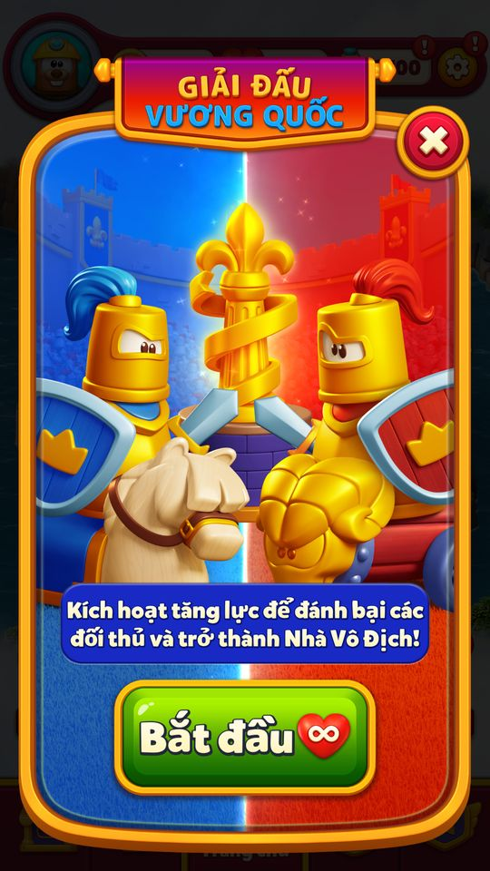
Config mặc định APK, event1003 giả lập: màn giới thiệu Giải đấu Vương quốc, nút Bắt đầu có biểu tượng mạng vô hạn. 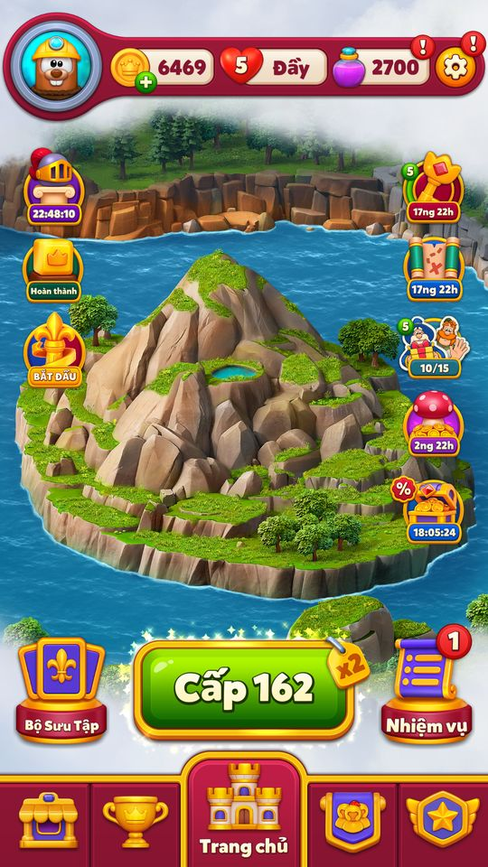
Bấm Start khi UID offline trở về Home, chưa tạo nhóm thật. 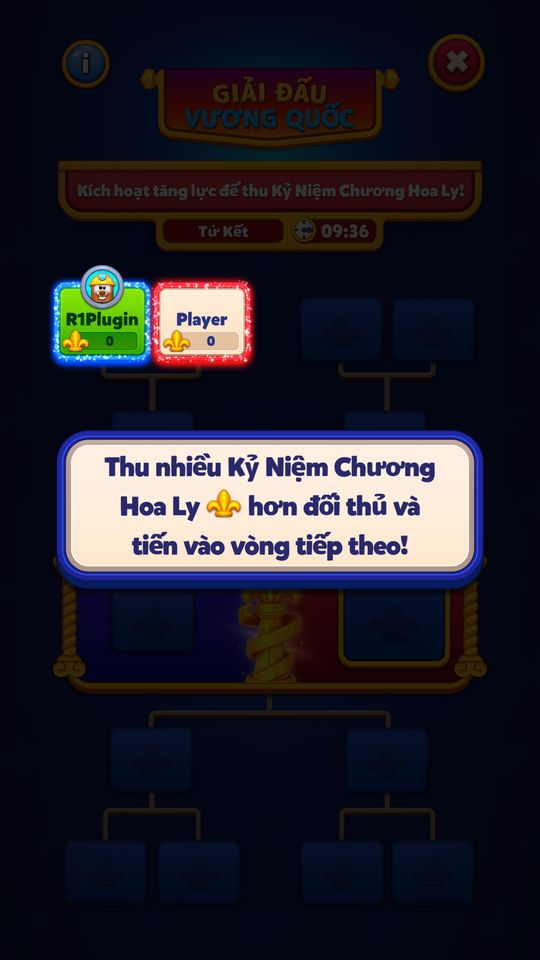
Fixture nhóm1/AB2/tứ kết, chỉ bản ghi chính mình và ô userId0 placeholder: tutorial thu nhiều hoa ly hơn đối thủ. 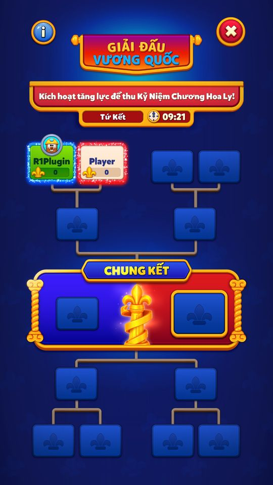
Đóng tutorial: bảng nhánh8vị trí, tứ kết đếm ngược từ10phút theo default durations600. 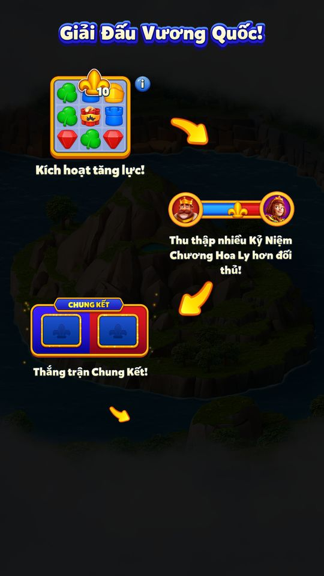
Info: kích hoạt tăng lực, thu nhiều hoa ly, thắng chung kết. Hình nhân vật là minh họa. 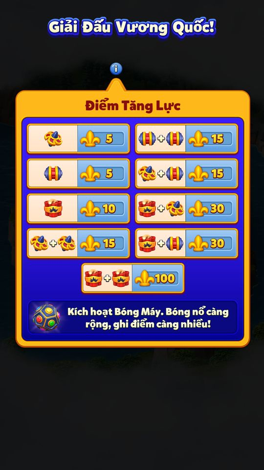
Bảng điểm UI: Spinner/Rocket5,Dynamite10; combo Spinner+Spinner/Rocket+Rocket/Spinner+Rocket15;Dynamite+Spinner/Rocket30;Dynamite+Dynamite100. ElectroBall ghi theo vùng nổ. 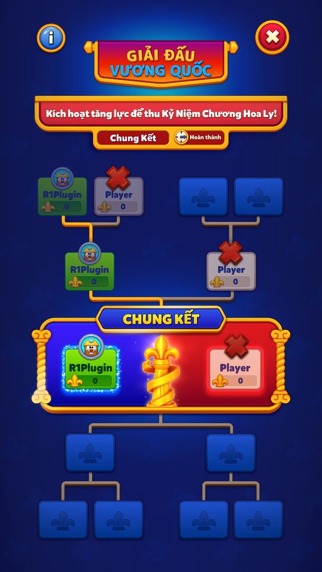
Fixture Stage4,HasFinalList và giờ vòng đã hết: bảng Chung kết Hoàn thành. Khi mở event, client tự claim; không phải thắng ba vòng thật. 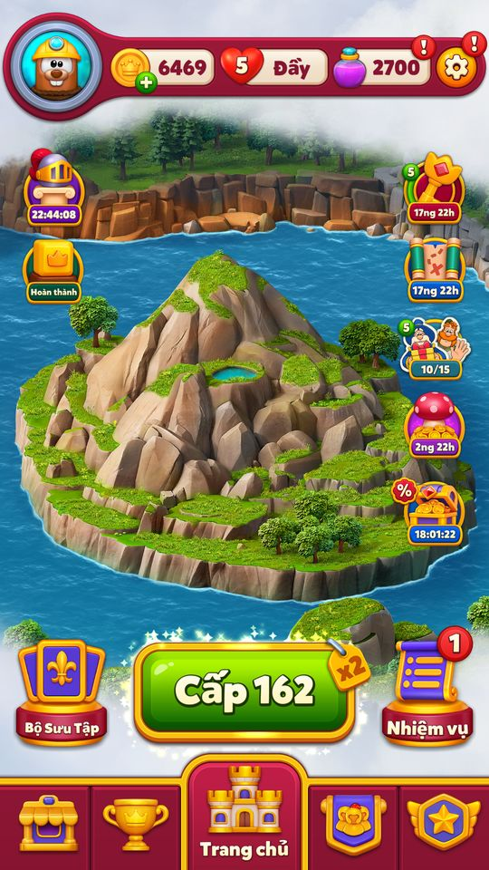
Sau claim đóng bảng: icon mất. Snapshot Rocket24→25,Dynamite25→26,Hammer100→101,WizardHat100→101; Coins6469 giữ nguyên;claim0→2. Restart giữ claim2 và phần thưởng; không cộng lặp. Chưa chụp được popup liệt kê thưởng riêng. 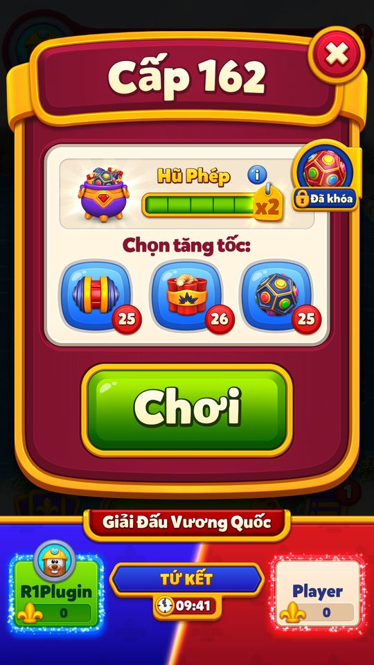
Fixture tứ kết: prelevel hiển thị hai phía, điểm0 và timer; Hũ Phép đầyx2. 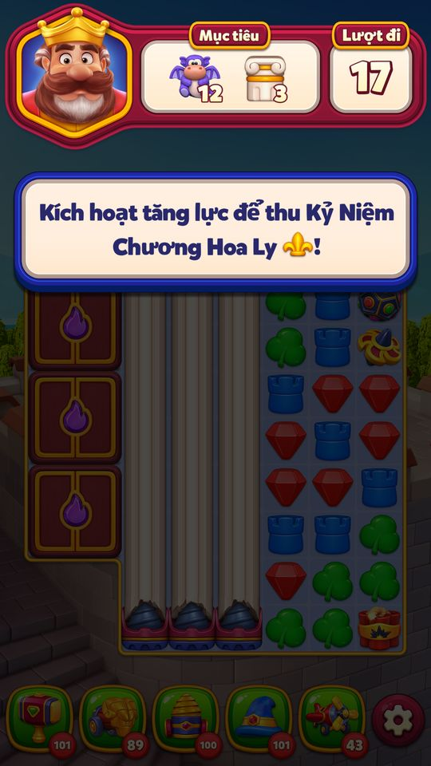
Chơi162 bằng ADB: tap Rocket18→17moves, Score0→10 (Rocket5×HũPhépx2); đối thủ placeholder. 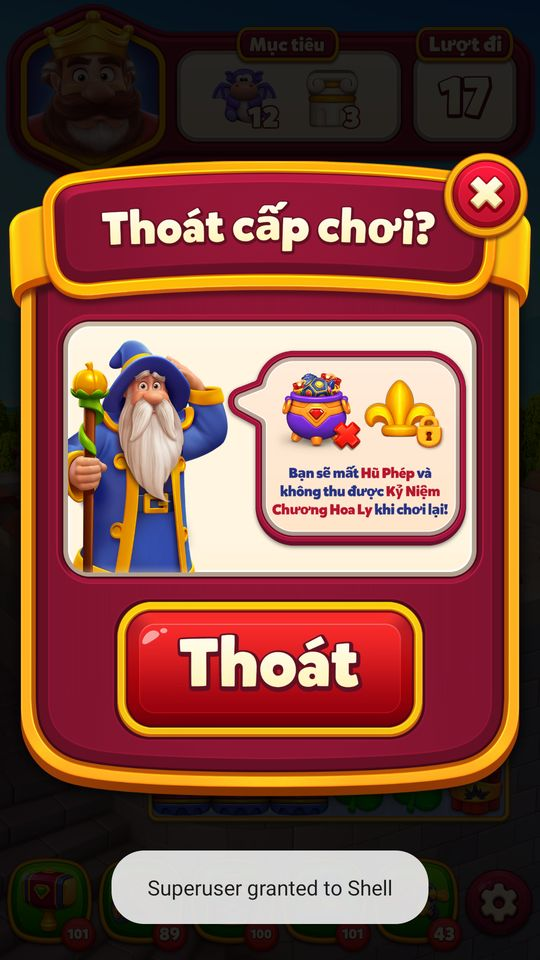
Sau xác nhận mất mạng đầu tiên, client hỏi tiếp: mất Hũ Phép và không thu được hoa ly khi chơi lại. 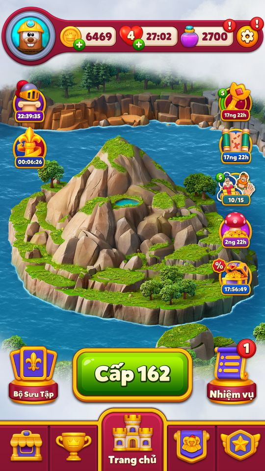
Xác nhận bỏ màn, đóng retry về Home: mạng5→4,HũPhép5→0; Score10 giữ nguyên,IsScoreLocked0→1. 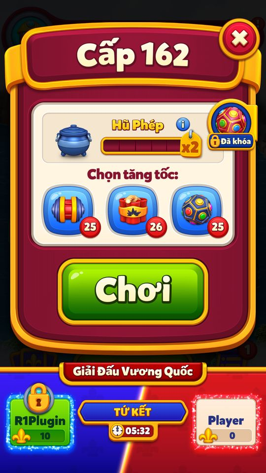
Mở lại162: ổ khóa trên avatar, giữ10điểm, timer vẫn chạy. 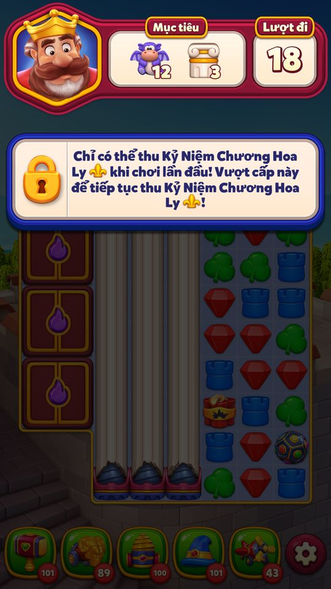
Tutorial gameplay: chỉ thu hoa ly lần chơi đầu; cần vượt cấp để tiếp tục thu. 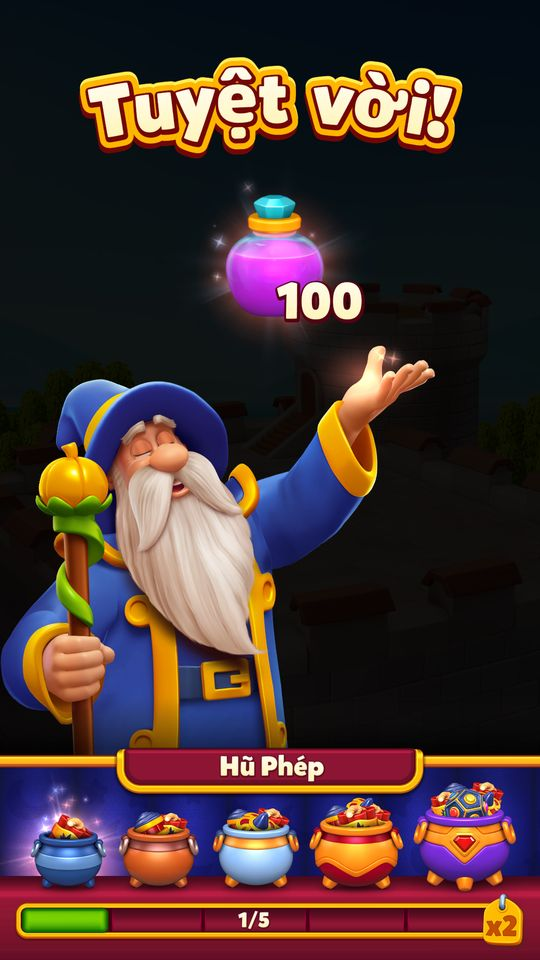
Thắng lại162 bằng thao tác ADB, dùng EB/D và6Plane thực tiêu thụ43→37: lên163,Coins6469→6501,HũPhép0→1. Snapshot IsScoreLocked1→0,Score vẫn10; vòng chơi lại không cộng điểm kể cả thắng. - Playtest 12/11/2026 — bằng chứng quan sáttesterPlaytestCác ảnh là quan sát từng bước. Mode/override ghi trong appendix/playtest-20261112; chưa tương đương toàn UC đã pass.
Config mặc định APK, event1003 giả lập: màn giới thiệu Giải đấu Vương quốc, nút Bắt đầu có biểu tượng mạng vô hạn. Bấm Start khi UID offline trở về Home, chưa tạo nhóm thật. Fixture nhóm1/AB2/tứ kết, chỉ bản ghi chính mình và ô userId0 placeholder: tutorial thu nhiều hoa ly hơn đối thủ. Đóng tutorial: bảng nhánh8vị trí, tứ kết đếm ngược từ10phút theo default durations600. Info: kích hoạt tăng lực, thu nhiều hoa ly, thắng chung kết. Hình nhân vật là minh họa. Bảng điểm UI: Spinner/Rocket5,Dynamite10; combo Spinner+Spinner/Rocket+Rocket/Spinner+Rocket15;Dynamite+Spinner/Rocket30;Dynamite+Dynamite100. ElectroBall ghi theo vùng nổ. Fixture Stage4,HasFinalList và giờ vòng đã hết: bảng Chung kết Hoàn thành. Khi mở event, client tự claim; không phải thắng ba vòng thật. Sau claim đóng bảng: icon mất. Snapshot Rocket24→25,Dynamite25→26,Hammer100→101,WizardHat100→101; Coins6469 giữ nguyên;claim0→2. Restart giữ claim2 và phần thưởng; không cộng lặp. Chưa chụp được popup liệt kê thưởng riêng. Fixture tứ kết: prelevel hiển thị hai phía, điểm0 và timer; Hũ Phép đầyx2. Chơi162 bằng ADB: tap Rocket18→17moves, Score0→10 (Rocket5×HũPhépx2); đối thủ placeholder. Sau xác nhận mất mạng đầu tiên, client hỏi tiếp: mất Hũ Phép và không thu được hoa ly khi chơi lại. Xác nhận bỏ màn, đóng retry về Home: mạng5→4,HũPhép5→0; Score10 giữ nguyên,IsScoreLocked0→1. Mở lại162: ổ khóa trên avatar, giữ10điểm, timer vẫn chạy. Tutorial gameplay: chỉ thu hoa ly lần chơi đầu; cần vượt cấp để tiếp tục thu. Thắng lại162 bằng thao tác ADB, dùng EB/D và6Plane thực tiêu thụ43→37: lên163,Coins6469→6501,HũPhép0→1. Snapshot IsScoreLocked1→0,Score vẫn10; vòng chơi lại không cộng điểm kể cả thắng.


Bảng điểm (code const, nhân hệ số level của màn đang chơi)
| Nguồn điểm | Điểm gốc | Màn thường (×1) | Màn Super Hard (×5) |
|---|---|---|---|
| Thắng level | 10 | 10 | 50 |
| Rocket / Spinner | 5 | 5 | 25 |
| Dynamite | 10 | 10 | 50 |
| Electro Ball | 20 (40 khi có Super Electro Ball) | 20 | 100 |
| Combo Rocket+Rocket / Spinner+Rocket / Spinner+Spinner | 15 | 15 | 75 |
| Combo Dynamite+Rocket / Dynamite+Spinner | 30 | 30 | 150 |
| Combo Dynamite+Dynamite | 100 | 100 | 500 |
| Mỗi nước đi còn lại | 7 | 7 | 35 |
Code KingdomDuelsLevelData.GetScoreForSpecialItem / UseSpecialCombo (bảng hằng DAT_00e0679c, dùng chung với Power Rush) / TryAddScoreForNotReplacedRemainingMoves; thắng level ở LastPlayedLevelData.AddRewardDatas. Combo có Electro Ball dùng hệ số riêng (ElectroBall + Spinner/Rocket 5, + Dynamite 10); cách nhân chưa đọc hết.
Nhánh đấu (json default + code const)
| Stage | Vòng | Thời lượng | Người còn lại |
|---|---|---|---|
| 1 | Tứ kết | 600 giây | 8 |
| 2 | Bán kết | 600 giây | 4 |
| 3 | Chung kết | 600 giây | 2 |
| 4 | Vô địch | — | 1 |
APK kingdom_duels_default_config.json; thời lượng không hợp lệ thì dùng DefaultStageDuration 600. Code Nhóm AB: 0 NonDecided, 1 Disabled, 2 PresetFlow, 3 DynamicFlow, 4 NonParticipant; nhóm 2 và 4 tự vào giải (ShouldAutoEnter).
Vận dụng cho game khác
- Trận 1-1 ngắn 10 phút với điểm đối thủ cập nhật trực tiếp: tạo cảm giác PvP realtime trong khi level vẫn là puzzle chơi một mình.
- Chấm điểm theo vật phẩm đặc biệt, combo và nước đi còn lại thay vì chỉ thắng/thua: thưởng lối chơi “đẹp” và dạy người chơi tạo combo. Ở màn thường, 10 nước đi còn lại (70 điểm) đáng giá gấp 7 lần một trận thắng.
- Tặng mạng vô hạn đúng bằng thời gian vòng để mạng không chặn trận đấu; chi phí thấp vì chỉ kéo dài 10 phút.
- Thua thì khoá điểm thay vì trừ điểm: phạt nhẹ, dễ hiểu, khuyến khích thắng lại thật nhanh.
- Chặn người AFK bằng luật “event trước 0 điểm thì phải thắng 1 level mới được vào lại”.
- Nhận định Rủi ro: cần TCP ổn định và đủ người online cùng lúc; ghép thiếu người hoặc rớt mạng giữa vòng làm hỏng trải nghiệm. Nên có bot dự phòng phía server (hai luồng Preset / Dynamic gợi ý họ đang thử cả hai).
Ảnh cần chụp (7) — 16 ảnh đã gắn
Chụp vào screens/deep_1112/KingdomDuels/ rồi ghi tên file vào flow[].shots.
- Dialog bắt đầu / nhắc: Dialog bắt đầu Kingdom Duels
- Ghép trận: KingdomDuelsScreen: nhánh 8 ghế, đối thủ tứ kết
- Tutorial: Tutorial màn nhánh và tooltip luật ghi điểm
- Trong level: Thanh đối đầu trong level: điểm hai bên, đồng hồ
- Thua level: Ghế bị khoá sau khi thua level
- Hết giờ vòng: Versus scene WonStage / Eliminated
- Vô địch: Versus scene WonTournament và panel thưởng
Bảng tổng hợp mọi tính năng đã làm chi tiết: RoyalKingdom_ThietKeChiTiet.xlsx.
Mở khóa & điểm vào
Level ≥ 66 (KingdomDuelsManager.get_UnlockLevel = 0x42). Có nhóm AB riêng (KingdomDuelsManager consts: NonDecided 0, DisabledGroup 1, PresetFlowGroup 2, DynamicFlowGroup 3, NonParticipantGroup 4); get_ShouldAutoEnter = nhóm 2 hoặc 4. Vào event cần còn đủ thời gian cho các vòng còn lại (HasEnoughTimeToEnter so GetTotalDurationInMs với thời gian server event / arena) và nếu event trước người chơi không ghi điểm (NotScoredInLastEvent) thì phải thắng 1 level mới được vào lại (get_CanEnterEvent).
Điểm vào:
- Icon Kingdom Duels trên Home (FeatureDependencyConfig left, KINGDOM_DUELS (23) priority 56)
- Dialog bắt đầu / nhắc (
TryAddStartDialog,TryAddReminderDialog) - Màn hình nhánh đấu
KingdomDuelsScreen - Thanh đối đầu trong level (
KingdomDuelsGameplayBarViewData) - Panel prelevel
- Thẻ Events Tab (có hiện mạng vô hạn khi bắt đầu:
get_ShowsUnlimitedLivesOnEventsTabStart)
Cách hoạt động
- Khi server có event mới, người chơi vào (tự động với nhóm AB 2/4 hoặc bấm từ dialog / Events Tab) qua
TryEnterSession→EnterKingdomDuelsHttpCommand; được thưởng mạng vô hạn bằng thời lượng vòng (hoặc tổng 3 vòng khi auto-enter) quaGiveUnlimitedLifeReward. - Server ghép 8 người (
KingdomDuelsBracketData: quarterFinal / semiFinal / finalStage, mỗi trận 2 ghếKingdomDuelsSeatDatauserId/score/isLocked/lastScoreUpdateTime) và báoOnMatchFoundqua TCP. - Trong vòng,
KingdomDuelsLevelDatacộng điểm khi dùng vật phẩm đặc biệt / combo / nước đi còn lại (× enteredLevelMultiplier) vàLastPlayedLevelData.AddRewardDatascộng hệ số level × 10 khi thắng. - Điểm gửi lên bằng
UpdateKingdomDuelsHttpCommand/UpdateKingdomDuelsScoreTcpRequest; điểm đối thủ về quaOnOpponentScoreUpdated. - Hết
RemainingStageTimeInMs,TryAutoAdvanceNextStage/ProcessDynamicStageResultxác định người thắng (KingdomDuelsBracketQuery.DetermineWinner), hiện versus scene (WonStage / Eliminated / WonTournament) và chuyển vòng. - Thắng chung kết (stage 4 = WinnerStage) →
TryClaimtrao thưởng 'KD-Winner', báo Medal Missions. - Bị loại → 'Eliminated', chờ event sau.
Phần thưởng
Phần thưởng (theo GDD)
| Ngữ cảnh | Phần thưởng | Bằng chứng |
|---|---|---|
| Vô địch (thắng chung kết) | 1 Wizard Hat + 1 Hammer + 1 Dynamite + 1 Rocket (+ 1 CP4Gói thẻ 4 sao live) 1 CP4Gói thẻ 4 sao live) | kingdom_duels_default_config.json primary.r; KingdomDuelsManager.TryClaim |
| Tham gia mỗi vòng | Mạng vô hạn bằng thời lượng vòng (mặc định 600 giây) hoặc tổng các vòng khi auto-enter | KingdomDuelsManager.GiveUnlimitedLifeReward |
Số liệu chính
| Chỉ số | Giá trị | Nguồn |
|---|---|---|
| Level mở | 66 | UnlockLevel · code const |
| 8 người, 3 vòng (tứ kết, bán kết, chung kết), stage 4 = vô địch | 8 / 1 / 4 | MaxPlayerCount / InitialStage / WinnerStage · code const |
| Thời lượng vòng khi config không hợp lệ | 600 | DefaultStageDuration · code const |
| Số lần thử lấy kết quả vòng | 10 | MaxFinalListFetchTryCount · code const |
| Thời lượng tứ kết / bán kết / chung kết (10 phút mỗi vòng) | 600 / 600 / 600 | primary.durations · json default |
| Điểm mỗi nước đi còn lại (× multiplier) | 7 | RemainingMovesCollectibleAmount · code const |
| Hằng hiển thị collect view | 10 / 15 | InitialCollectibleAmount / CollectViewPoolAmount · code const |
Use case (14)
Bấm vào từng use case để mở. Mở/đóng tất cả
UC-01 Nhận event mới
Các bước- RefreshProgress → UpdateInfo(KingdomDuelsResponseContent) (IsResponseStale bỏ response cũ)
- OnReceivedNewServerEvent: reset dữ liệu vòng
- UpdateStageDurations(configType, rawDurations): durations không hợp lệ → log 'Received invalid stage durations config from server/user' và dùng DefaultStageDuration 600
| Actor | Server |
|---|---|
| Trigger | Refresh / GetKingdomDuelsHttpCommand |
| Điều kiện | Level ≥ 66, nhóm AB ≠ Disabled |
| Kết quả | Icon hiện; có thể auto dialog |
| Quy tắc / số liệu | durations mặc định [600, 600, 600] giây |
| Evidence | KingdomDuelsManager.RefreshProgress; KingdomDuelsManager.UpdateInfo; KingdomDuelsManager.IsResponseStale; KingdomDuelsManager.UpdateStageDurations |
UC-02 Vào giải (thủ công hoặc tự động)
Các bước- TryEnterSession(origin, stage) → EnterKingdomDuelsHttpCommand + EnteredKingdomDuelsTcpRequest
- TryConnectToTcpForKingdomDuels (AuthenticateTcpRequest)
- OnMatchFound(response): lưu trận, ghế, đối thủ (pendingMatchFoundCache nếu chưa có group)
- Analytics KDEnter (opponent_id, reward_unlimited_lives)
| Actor | Player |
|---|---|
| Trigger | Bấm Play ở dialog / Events Tab, hoặc tự động (nhóm AB 2/4) |
| Điều kiện | CanEnterEvent: đủ thời gian, đã ghi điểm ở event trước (NotScoredInLastEvent = false) |
| Kết quả | Màn nhánh đấu hiện đối thủ vòng tứ kết |
| Quy tắc / số liệu | MaxPlayerCount = 8; InitialStage = 1 Playtest13/11: Bấm Start khi UID offline trở về Home, chưa tạo nhóm thật. Fixture nhóm1/AB2/tứ kết, chỉ bản ghi chính mình và ô userId0 placeholder: tutorial thu nhiều hoa ly hơn đối thủ. |
| Evidence | KingdomDuelsManager.TryEnterSession; KingdomDuelsManager.TryConnectToTcpForKingdomDuels; KingdomDuelsManager.OnMatchFound; KingdomDuelsManager.TryApplyPendingMatchFoundCache; duels_sweep_ledger.json; EV_Duels_* |
UC-03 Mạng vô hạn khi thi đấu
Các bước- GetConfiguredUnlimitedLivesRewardSeconds: auto-enter → tổng thời lượng các vòng (ms/1000); ngược lại → StageDurations[CurrentStage]
- GiveUnlimitedLifeReward: LifeHelper.AddUnlimitedLivesInSeconds, set UnlimitedLivesStage, LifeInfoView.UpdateView ('Unlimited life reward granted for stage: {0}')
| Actor | System |
|---|---|
| Trigger | Vào giải / sang vòng mới |
| Điều kiện | WillGrantUnlimitedLifeReward: event mới chưa vào nhóm, hoặc UnlimitedLivesStage < stage hiện tại (auto-enter: chưa nhận lần nào) |
| Kết quả | Mạng vô hạn đúng bằng thời gian vòng (mặc định 600 giây) |
| Evidence | KingdomDuelsManager.get_WillGrantUnlimitedLifeReward; KingdomDuelsManager.GetConfiguredUnlimitedLivesRewardSeconds; KingdomDuelsManager.GiveUnlimitedLifeReward |
UC-04 Ghi điểm trong level
Các bước- UseSpecialItem(itemType): điểm = enteredLevelMultiplier × (Rocket/Spinner 5, Dynamite 10, Electro Ball 20 hoặc 40 khi có Super Electro Ball)
- UseSpecialCombo(comboType): điểm theo bảng combo × multiplier
- RemainingMovesEnd: TryAddScoreForNotReplacedRemainingMoves = nước đi còn lại × multiplier × 7; TryAddScoreForSpecialItemsOnBoard cho vật phẩm còn trên bàn
- Collect view bay điểm lên thanh đối đầu (KingdomDuelsGameplayCollectView)
| Actor | Player |
|---|---|
| Trigger | Dùng vật phẩm đặc biệt / combo trong level khi đang có vòng |
| Điều kiện | CanIncreaseScore: trong nhóm, còn giờ vòng, điểm không bị khoá |
| Kết quả | Điểm vòng tăng, cập nhật LevelCollectableCountForEvt |
| Quy tắc / số liệu | InitialCollectibleAmount = 10; RemainingMovesCollectibleAmount = 7; ElectroBallSpinnerComboFactor = 5; ElectroBallRocketComboFactor = 5; ElectroBallDynamiteComboFactor = 10 Playtest13/11: Chơi162 bằng ADB: tap Rocket18→17moves, Score0→10 (Rocket5×HũPhépx2); đối thủ placeholder. |
| Evidence | KingdomDuelsLevelData.UseSpecialItem; KingdomDuelsLevelData.GetScoreForSpecialItem; KingdomDuelsLevelData.UseSpecialCombo; KingdomDuelsLevelData.TryAddScoreForNotReplacedRemainingMoves; KingdomDuelsLevelData.get_CanIncreaseScore; duels_sweep_ledger.json; EV_Duels_* |
UC-05 Thắng level: cộng điểm và mở khoá
Các bước- LastPlayedLevelData.AddRewardDatas: kingdomDuelsData.AddScore(GetMultiplierForLevel × 10)
- OnLevelWin: IsScoreLocked = false; KingdomDuelsGameplayHelper.OnLevelWin; xoá NotScoredInLastEvent
| Actor | Player |
|---|---|
| Trigger | Thắng level |
| Điều kiện | Đang trong vòng |
| Kết quả | Điểm tăng 10 / 20 / 50… theo độ khó |
| Quy tắc / số liệu | Hệ số level: 1 thường, 2 hard, 5 super hard, 3 kingdom, 10 dark (level ≥ 25) × Magic Pot Playtest13/11: Thắng lại162 bằng thao tác ADB, dùng EB/D và6Plane thực tiêu thụ43→37: lên163,Coins6469→6501,HũPhép0→1. Snapshot IsScoreLocked1→0,Score vẫn10; vòng chơi lại không cộng điểm kể cả thắng. |
| Evidence | LastPlayedLevelData.AddRewardDatas; KingdomDuelsLevelData.AddScore; KingdomDuelsManager.OnLevelWin; duels_sweep_ledger.json; EV_Duels_* |
UC-06 Thua level: khoá điểm
Các bước- Trước khi bỏ level: ShouldShowWarningOnLevelFail (ShouldProgressInLevel và điểm chưa khoá)
- OnLevelFail: IsScoreLocked = true; GameplayHelper.UpdateBarWithLatestData; DataHelper.SyncLocalDataToBracket
| Actor | Player |
|---|---|
| Trigger | Thua level trong vòng |
| Điều kiện | ShouldProgress hoặc WaitingForFinalList |
| Kết quả | Ghế hiện trạng thái locked với đối thủ; không cộng thêm điểm cho tới khi thắng lại (suy luận từ CanIncreaseScore) |
| Quy tắc / số liệu | Playtest13/11: Sau xác nhận mất mạng đầu tiên, client hỏi tiếp: mất Hũ Phép và không thu được hoa ly khi chơi lại. Xác nhận bỏ màn, đóng retry về Home: mạng5→4,HũPhép5→0; Score10 giữ nguyên,IsScoreLocked0→1. Mở lại162: ổ khóa trên avatar, giữ10điểm, timer vẫn chạy. |
| Evidence | KingdomDuelsManager.OnLevelFail; KingdomDuelsManager.ShouldShowWarningOnLevelFail; KingdomDuelsLevelData.get_IsScoreLocked; duels_sweep_ledger.json; EV_Duels_* |
UC-07 Đồng bộ điểm thời gian thực
Các bước- AppendCommandsToUpdateProgress / AppendCommandsToPingOnly thêm UpdateKingdomDuelsHttpCommand khi ShouldSendProgress
- TrySendProgress(remainingTime): gửi lần cuối trước khi hết giờ (IsLastSecondsScoreSent)
- OnHttpScoreUpdateFinish(isSuccess, score) lưu LastSentScore
- OnOpponentScoreUpdated(KingdomDuelsOpponentScoreUpdate) cập nhật điểm đối thủ
| Actor | System |
|---|---|
| Trigger | Điểm thay đổi / timer |
| Điều kiện | Trong vòng |
| Kết quả | Thanh đối đầu luôn cập nhật hai bên |
| Evidence | KingdomDuelsManager.AppendCommandsToUpdateProgress; KingdomDuelsManager.TrySendProgress; KingdomDuelsManager.OnHttpScoreUpdateFinish; KingdomDuelsManager.OnOpponentScoreUpdated |
UC-08 Hết giờ vòng: phân định thắng thua
Các bước- TryFetchFinalList (tối đa MaxFinalListFetchTryCount = 10 lần)
- ProcessFinalList / ProcessDynamicStageResult / TryAutoAdvanceNextStage
- KingdomDuelsBracketQuery.DetermineWinner: điểm cao hơn thắng; bằng điểm → lastScoreUpdateTime sớm hơn thắng
- Analytics KDRoundFinish; TryTriggerVersusScene(WonStage / Eliminated)
| Actor | System |
|---|---|
| Trigger | IsStageTimeFinished |
| Kết quả | Thắng → sang vòng sau (AutoAdvanceToStage, ResetForNewStage); thua → bị loại ('Eliminated before stage: {0}') |
| Quy tắc / số liệu | Stage: 1 tứ kết, 2 bán kết, 3 chung kết, 4 vô địch |
| Evidence | KingdomDuelsManager.TryFetchFinalList; KingdomDuelsManager.TryAutoAdvanceNextStage; KingdomDuelsBracketQuery.DetermineWinner; KingdomDuelsManager.AutoAdvanceToStage |
UC-09 Vô địch: nhận thưởng
Các bước- OnVersusDialogOpen → TryClaim
- MedalMissionsManager.TryReportProgress(10, 1)
- Nếu đang ở Home: CardCollectionBundleManager.TryLoadBundledConfigs, CardCollectionPoolManager.TryToCreateCardPool(2)
- KingdomDuelsConfigData.TryGetWinnerStep → ClaimHelper.GetAndAddRewardsToInventory(origin 30, 'KD-Winner')
- KingdomDuelsEvtHelper.SendClaimAnalyticsEvent (KDClaim)
| Actor | Player |
|---|---|
| Trigger | Thắng chung kết |
| Điều kiện | WillGetReward: DidWinEvent, trong nhóm, hết giờ vòng; CanClaimStage |
| Kết quả | 1 WH + 1 H + 1 D + 1 R (+1 CP4 khi mùa thẻ chạy, live) |
| Quy tắc / số liệu | Chỉ người vô địch có thưởng; ClaimState Win = 2 / Lose = 1 Playtest13/11: Fixture Stage4,HasFinalList và giờ vòng đã hết: bảng Chung kết Hoàn thành. Khi mở event, client tự claim; không phải thắng ba vòng thật. Sau claim đóng bảng: icon mất. Snapshot Rocket24→25,Dynamite25→26,Hammer100→101,WizardHat100→101; Coins6469 giữ nguyên;claim0→2. Restart giữ claim2 và phần thưởng; không cộng lặp. Chưa chụp được popup liệt kê thưởng riêng. |
| Evidence | KingdomDuelsManager.TryClaim; KingdomDuelsManager.get_WillGetReward; KingdomDuelsManager.OnVersusDialogOpen; duels_sweep_ledger.json; EV_Duels_* |
UC-10 Không ghi điểm ở event trước
Các bước- TryClaim set NotScoredInLastEvent = true
- get_CanEnterEvent trả false cho tới khi OnLevelWin xoá cờ
| Actor | System |
|---|---|
| Trigger | Claim kết thúc event với điểm 0 |
| Điều kiện | DidScoredInLastEvent = false |
| Kết quả | Người chơi AFK không bị auto-ghép vào giải sau |
| Evidence | KingdomDuelsManager.DidScoredInLastEvent; KingdomDuelsManager.get_CanEnterEvent; KingdomDuelsManager.OnLevelWin |
UC-11 Dialog bắt đầu / nhắc lại
Các bước- TryAddStartDialog / TryAddReminderDialog
- StartDialogOpened(isReminderDialog, isFromIcon) ghi DidEverSeeStartDialog / isReminderPopupShown
| Actor | System |
|---|---|
| Trigger | Home flow |
| Điều kiện | CanShowAutoDialog; ShouldShowStartDialog / ShouldShowReminderPopup (mỗi session một lần) |
| Kết quả | Mời vào giải |
| Quy tắc / số liệu | Playtest13/11: Config mặc định APK, event1003 giả lập: màn giới thiệu Giải đấu Vương quốc, nút Bắt đầu có biểu tượng mạng vô hạn. |
| Evidence | KingdomDuelsManager.TryAddStartDialog; KingdomDuelsManager.TryAddReminderDialog; KingdomDuelsManager.StartDialogOpened; duels_sweep_ledger.json; EV_Duels_* |
UC-12 Tutorial
Các bước- TryShowScreenTutorialFromEventsTab
- KingdomDuelsTutorialType StepOne / StepTwo trên màn nhánh
- Tooltip đối thủ bị khoá trong level / ngoài màn (isGameplayOpponentLockedTooltipShown, isEventSceneOpponentLockedTooltipShown)
| Actor | System |
|---|---|
| Trigger | Lần đầu mở màn hình / trong level |
| Điều kiện | Bit SceneTutorialSeen / GameplayScoreTutorialSeen / GameplayLockedTutorial chưa set |
| Kết quả | Giới thiệu luật ghi điểm và trạng thái khoá |
| Quy tắc / số liệu | Playtest13/11: Tutorial gameplay: chỉ thu hoa ly lần chơi đầu; cần vượt cấp để tiếp tục thu. Bảng điểm UI: Spinner/Rocket5,Dynamite10; combo Spinner+Spinner/Rocket+Rocket/Spinner+Rocket15;Dynamite+Spinner/Rocket30;Dynamite+Dynamite100. ElectroBall ghi theo vùng nổ. |
| Evidence | KingdomDuelsManager.TryShowScreenTutorialFromEventsTab; KingdomDuelsProgress (SceneTutorialSeenIndex, GameplayScoreTutorialSeenIndex, GameplayLockedTutorialIndex); duels_sweep_ledger.json; EV_Duels_* |
UC-13 Thoát game giữa level
Các bước- CheckIfQuitInGame
- WontRestoreLevel
| Actor | System |
|---|---|
| Trigger | Mở lại app |
| Điều kiện | Đang trong vòng |
| Kết quả | Level bỏ dở xử lý như thua (suy luận) |
| Evidence | KingdomDuelsManager.CheckIfQuitInGame; KingdomDuelsManager.WontRestoreLevel |
UC-14 Bị backend tắt / Medal Missions
Các bước- OnDisabledByBackend → ClearData
- CreateMedalMissionsTasks tạo KingdomDuelsWinEventMedalMissionsTask; get_MedalMissionsCreditEndDate cho credit
| Actor | Server |
|---|---|
| Trigger | Cờ disable; Medal Missions đang chạy |
| Evidence | KingdomDuelsManager.OnDisabledByBackend; KingdomDuelsManager.CreateMedalMissionsTasks; KingdomDuelsManager.get_MedalMissionsCreditEndDate |
Cấu hình (19)
Gộp mọi nguồn: const trong code, JSON mặc định trong Resources, config class, storage key, AB test, giá trị server trong snapshot thiết bị 11/11/2026.
| Nguồn | Key | Kiểu | Giá trị | Ý nghĩa | Nơi định nghĩa |
|---|---|---|---|---|---|
| code const | UnlockLevel | int | 66 | Level mở | KingdomDuelsManager.get_UnlockLevel |
| code const | MaxPlayerCount / InitialStage / WinnerStage | int | 8 / 1 / 4 | 8 người, 3 vòng (tứ kết, bán kết, chung kết), stage 4 = vô địch | KingdomDuelsConfig |
| code const | DefaultStageDuration | int giây | 600 | Thời lượng vòng khi config không hợp lệ | KingdomDuelsManager |
| code const | MaxFinalListFetchTryCount | int | 10 | Số lần thử lấy kết quả vòng | KingdomDuelsManager |
| AB test | Kingdom Duels AB groups | AbTestUserGroup | 0 NonDecided; 1 DisabledGroup; 2 PresetFlowGroup; 3 DynamicFlowGroup; 4 NonParticipantGroup | Nhóm 2/4 tự vào giải (ShouldAutoEnter); nhóm 3 xử lý kết quả động (ProcessDynamicStageResult) (suy luận) | KingdomDuelsManager consts; KingdomDuelsDataHelper.GetCachedAbTestGroup |
| json default | primary.durations | int[3] giây | 600 / 600 / 600 | Thời lượng tứ kết / bán kết / chung kết (10 phút mỗi vòng) | Resources/kingdom_duels_default_config.json |
| json default | primary.r | EventReward[] | 1 WH + 1 H + 1 D + 1 R | Thưởng vô địch (TryGetWinnerStep) | Resources/kingdom_duels_default_config.json |
| code const | Điểm vật phẩm (GetScoreForSpecialItem) | int | Rocket 5; Spinner 5; Dynamite 10; Electro Ball 20 (40 khi Super Electro Ball bật); vật khác 0 | Nhân với enteredLevelMultiplier | KingdomDuelsLevelData.GetScoreForSpecialItem / UseSpecialItem |
| code const | RemainingMovesCollectibleAmount | int | 7 | Điểm mỗi nước đi còn lại (× multiplier) | KingdomDuelsLevelData.TryAddScoreForNotReplacedRemainingMoves |
| code const | ElectroBall combo factors | int | Spinner 5; Rocket 5; Dynamite 10 | Hệ số combo Electro Ball | KingdomDuelsLevelData consts |
| static array | Combo score table | int[] | DAT_00e0679c[comboType − 5] | Điểm combo; giá trị chưa giải | KingdomDuelsLevelData.UseSpecialCombo |
| code const | Điểm thắng level | int | GetMultiplierForLevel(true,true) × 10 | Cộng khi thắng | LastPlayedLevelData.AddRewardDatas |
| code const | InitialCollectibleAmount / CollectViewPoolAmount | int | 10 / 15 | Hằng hiển thị collect view | KingdomDuelsLevelData |
| server info (live 11/11) | CardCollection eventRewardOverrideConfigs[eventType=27] | override | s1 = 1 CP4 | Gói thẻ thêm vào thưởng vô địch. Chỉ overrider đầu tiên khớp (CardCollection → PoA → HiddenPath → Blitz) được dùng, không cộng dồn (EventRewardOverrider.GetOverrideConfigForEventStep) | CardCollectionTableItem.ServerEventConfig |
| server info (live 11/11) | FeatureDependencyConfig.left | KINGDOM_DUELS (23) priority 56, chung ô với POWER_RUSH (4) priority 70 (FeatureDependencyConfig live 11/11; FeatureWithIconType); prelevel priority 40 | Vị trí icon | LocalKeyValue FeatureDependencyConfig | |
| storage key | KingdomDuelsProgress (byte array, 103 bit) | bitfield | 0–1 ProgressVersion; 2–19 EventId; 20–21 AutoDialogState; 22–24 CurrentStage; 25–26 ClaimState; 27–90 GroupId; 91–93 EventAbGroup; 94 DidEverSeeStartDialog; 95 IsScoreLocked; 96 NotScoredInLastEvent; 97–98 UnlimitedLivesStage; 99 SceneTutorialSeen; 100 GameplayScoreTutorialSeen; 101 GameplayLockedTutorial; 102 ShouldShowVersusDialog | Tiến trình (IRefreshByteArray, ByteArrayKeyName) | KingdomDuelsProgress consts |
| storage key | KingdomDuelsTableItem.* | serverEventId, serverEventEndDate, serverEventConfig(+Version), userEventConfig(+Version), score, lastFetchedScore, lastFetchedLockedState, stageStartDate, hasFinalList, bracketJson, cachedMatchIdsJson, groupUserIdsTag, groupUsersLastFetchTime, isReminderPopupShown, reminderDialogClosedCount, isGameplayOpponentLockedTooltipShown, isEventSceneOpponentLockedTooltipShown, seenEliminationUserIds | Dữ liệu cục bộ | KingdomDuelsLocalData | |
| static array | Combo score table (giải) | int[6] | DynamiteDynamite 100, DynamiteRocket 30, RocketRocket 15, DynamiteSpinner 30, SpinnerRocket 15, SpinnerSpinner 15 | Dùng chung bảng combo với Power Rush | libil2cpp.so DAT_00e0679c (xem PowerRush.json) |
| CDN bundle typetree | Observed20261112.BundleLocalization | localization | Đã trích localization bundle; xem bảng English/Vietnamese và key đầy đủ. | Nguồn text UI đã lấy được, không chứng minh mọi nhánh event đã playtest. | appendix/bundle-localization.md |
Backend / server
| Command | Chiều | Mục đích |
|---|---|---|
EnterKingdomDuelsHttpCommand | client→server | Vào giải / vòng |
GetKingdomDuelsHttpCommand | client→server | Lấy thông tin event, nhánh đấu, final list (TryGetInfo / TryFetchFinalList) |
UpdateKingdomDuelsHttpCommand | client→server | Gửi điểm |
EnteredKingdomDuelsTcpRequest / UpdateKingdomDuelsScoreTcpRequest | client→server (TCP) | Báo đã vào và điểm thời gian thực |
KingdomDuelsMatchFound / KingdomDuelsOpponentScoreUpdate | server→client (TCP) | Ghép trận và điểm đối thủ |
Định dạng request/response: Giao thức backend.
Giao diện (UI)
| Element | Class | Mục đích |
|---|---|---|
| Màn hình nhánh đấu | Royal.Scenes.Home.Ui.Dialogs.KingdomDuels.KingdomDuelsScreen | 8 ghế, trận, trạng thái Pending/Active/Winner/Eliminated |
| Versus dialog | Royal.Scenes.Home.Ui.Dialogs.KingdomDuels.KingdomDuelsVersusDialogData | Kết quả vòng / đối thủ mới / vô địch |
| Thanh đối đầu trong level | Royal.Scenes.Home.Ui.Dialogs.KingdomDuels.KingdomDuelsGameplayBarViewData | Điểm hai bên, đồng hồ, trạng thái khoá |
| Hiệu ứng điểm | Royal.Scenes.Home.Ui.Dialogs.KingdomDuels.KingdomDuelsCollectableConfig | Cấu hình icon / màu collectable |
Analytics (3)
| Event | Tham số | Khi nào |
|---|---|---|
KDEnter | opponent_id, reward_unlimited_lives (+ common parameters) | Vào giải |
KDRoundFinish | round, opponent_id, player_score, opponent_score, new_opponent_id, is_winner | Kết thúc mỗi vòng |
KDClaim | reward_inventory, reward_coin, reward_unlimited_lives | Nhận thưởng vô địch |
Storage keys
KingdomDuelsTableItem KingdomDuelsProgress (byte array remote key)
Chưa đọc được / ghi chú
- Ý nghĩa chính xác của trạng thái 'locked' khi thua level và cách server ghép 8 người (bot hay người thật theo nhóm Preset/Dynamic) chưa rõ.
- Live 11/11 không có dữ liệu Kingdom Duels (tài khoản level thấp).
Tính năng liên quan
Mạng (Lives) Vật phẩm đặc biệt Super Electro Ball Magic Pot (bình thuốc) Medal Missions Bộ sưu tập thẻ Đấu trường (Champions Arena) Khung sự kiện Ưu tiên & mở tính năng
Nguồn đã đọc
- features/KingdomDuelsManager.md
- PseudoC/.../Units/KingdomDuels/KingdomDuelsManager.c
- PseudoC/.../Units/KingdomDuels/KingdomDuelsLevelData.c
- PseudoC/.../Units/KingdomDuels/KingdomDuelsBracketQuery.c
- PseudoC/.../Data/Session/LastPlayedLevelData.c
- Resources/kingdom_duels_default_config.json
- facts/runtime/live_1111 (CardCollectionTableItem.ServerEventConfig, FeatureDependencyConfig)